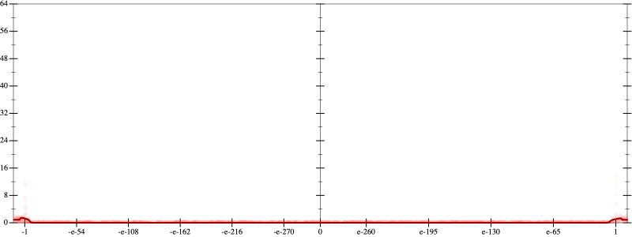
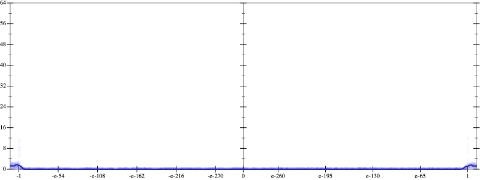
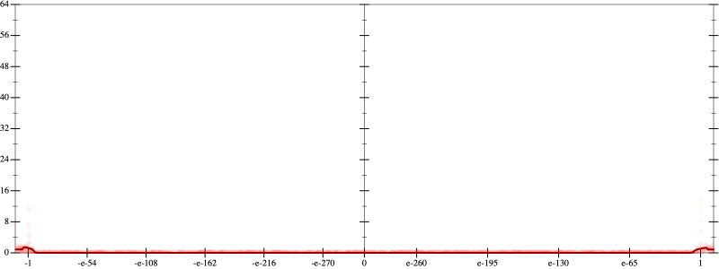
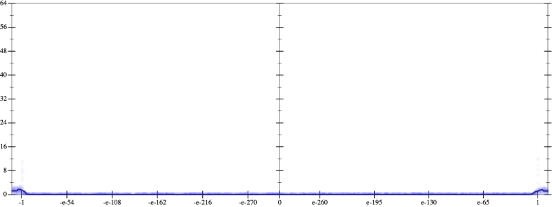

Initial program 0.1
\[\left(\left(\left(\left(\left(\left(-0.209473 + 21.994629 \cdot \left(x \cdot x\right)\right) + -373.908691 \cdot \left(\left(\left(x \cdot x\right) \cdot x\right) \cdot x\right)\right) + 2368.088379 \cdot \left(\left(\left(\left(\left(x \cdot x\right) \cdot x\right) \cdot x\right) \cdot x\right) \cdot x\right)\right) + -7104.265137 \cdot \left(\left(\left(\left(\left(\left(\left(x \cdot x\right) \cdot x\right) \cdot x\right) \cdot x\right) \cdot x\right) \cdot x\right) \cdot x\right)\right) + 10893.206543 \cdot \left(\left(\left(\left(\left(\left(\left(\left(\left(x \cdot x\right) \cdot x\right) \cdot x\right) \cdot x\right) \cdot x\right) \cdot x\right) \cdot x\right) \cdot x\right) \cdot x\right)\right) + -8252.429199 \cdot \left(\left(\left(\left(\left(\left(\left(\left(\left(\left(\left(x \cdot x\right) \cdot x\right) \cdot x\right) \cdot x\right) \cdot x\right) \cdot x\right) \cdot x\right) \cdot x\right) \cdot x\right) \cdot x\right) \cdot x\right)\right) + 2448.522949 \cdot \left(\left(\left(\left(\left(\left(\left(\left(\left(\left(\left(\left(\left(x \cdot x\right) \cdot x\right) \cdot x\right) \cdot x\right) \cdot x\right) \cdot x\right) \cdot x\right) \cdot x\right) \cdot x\right) \cdot x\right) \cdot x\right) \cdot x\right) \cdot x\right)\]
Applied simplify0.1
\[\leadsto \color{blue}{\left(\left(\left(\left(x \cdot x\right) \cdot \left(x \cdot x\right)\right) \cdot \left(\left(\left(x \cdot x\right) \cdot \left(x \cdot x\right)\right) \cdot \left(\left(x \cdot x\right) \cdot \left(x \cdot x\right)\right)\right)\right) \cdot \left(x \cdot \left(x \cdot 2448.522949\right) + -8252.429199\right) + \left(\left(\left(x \cdot 21.994629\right) \cdot x + -0.209473\right) + \left(\left(x \cdot x\right) \cdot \left(x \cdot x\right)\right) \cdot \left(-373.908691 + x \cdot \left(2368.088379 \cdot x\right)\right)\right)\right) + \left(\left(\left(x \cdot x\right) \cdot \left(x \cdot x\right)\right) \cdot \left(\left(x \cdot x\right) \cdot \left(x \cdot x\right)\right)\right) \cdot \left(10893.206543 \cdot \left(x \cdot x\right) + -7104.265137\right)}\]
- Using strategy
rm Applied add-cube-cbrt0.1
\[\leadsto \left(\left(\left(\left(x \cdot x\right) \cdot \left(x \cdot x\right)\right) \cdot \left(\left(\left(x \cdot x\right) \cdot \left(x \cdot x\right)\right) \cdot \left(\left(x \cdot x\right) \cdot \left(x \cdot x\right)\right)\right)\right) \cdot \left(x \cdot \left(x \cdot 2448.522949\right) + -8252.429199\right) + \left(\left(\left(x \cdot 21.994629\right) \cdot x + -0.209473\right) + \color{blue}{\left(\sqrt[3]{\left(\left(x \cdot x\right) \cdot \left(x \cdot x\right)\right) \cdot \left(-373.908691 + x \cdot \left(2368.088379 \cdot x\right)\right)} \cdot \sqrt[3]{\left(\left(x \cdot x\right) \cdot \left(x \cdot x\right)\right) \cdot \left(-373.908691 + x \cdot \left(2368.088379 \cdot x\right)\right)}\right) \cdot \sqrt[3]{\left(\left(x \cdot x\right) \cdot \left(x \cdot x\right)\right) \cdot \left(-373.908691 + x \cdot \left(2368.088379 \cdot x\right)\right)}}\right)\right) + \left(\left(\left(x \cdot x\right) \cdot \left(x \cdot x\right)\right) \cdot \left(\left(x \cdot x\right) \cdot \left(x \cdot x\right)\right)\right) \cdot \left(10893.206543 \cdot \left(x \cdot x\right) + -7104.265137\right)\]
 
